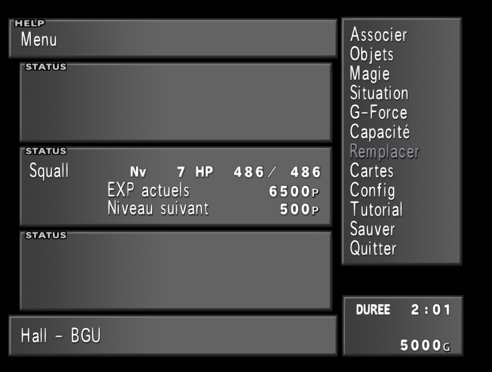

Pour Commencer il faut posséder des magies et des G-Forces que l'on peut associer via les menus "Associer" et "Magies", commencez par explorez les "Magies" ou séléctionnez une G-force dans "Associer".
Association G-Force et Magies
Gestion des Magies